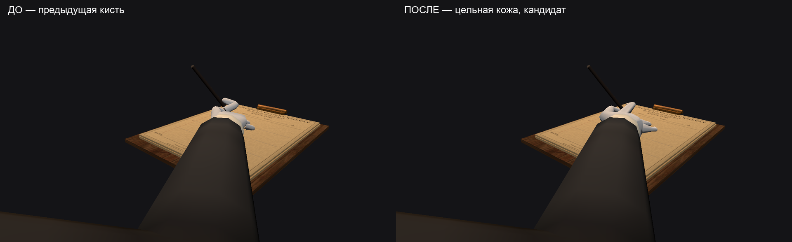
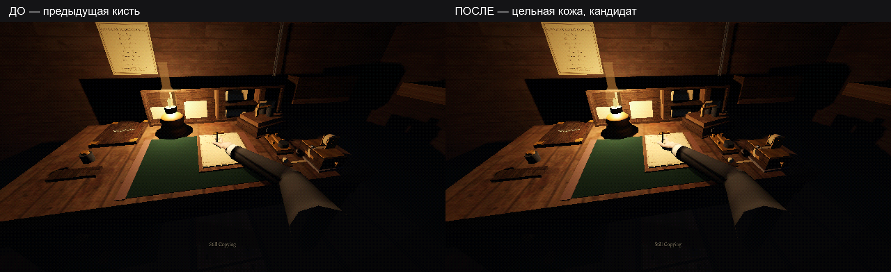
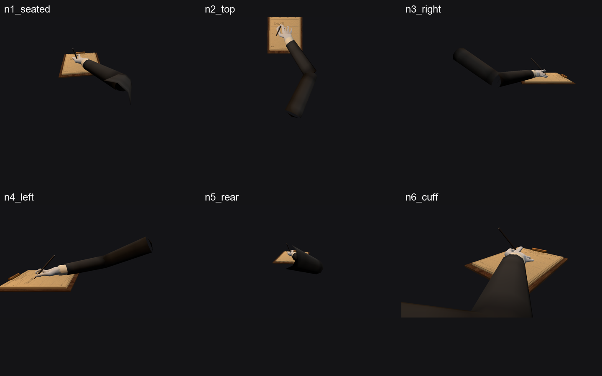
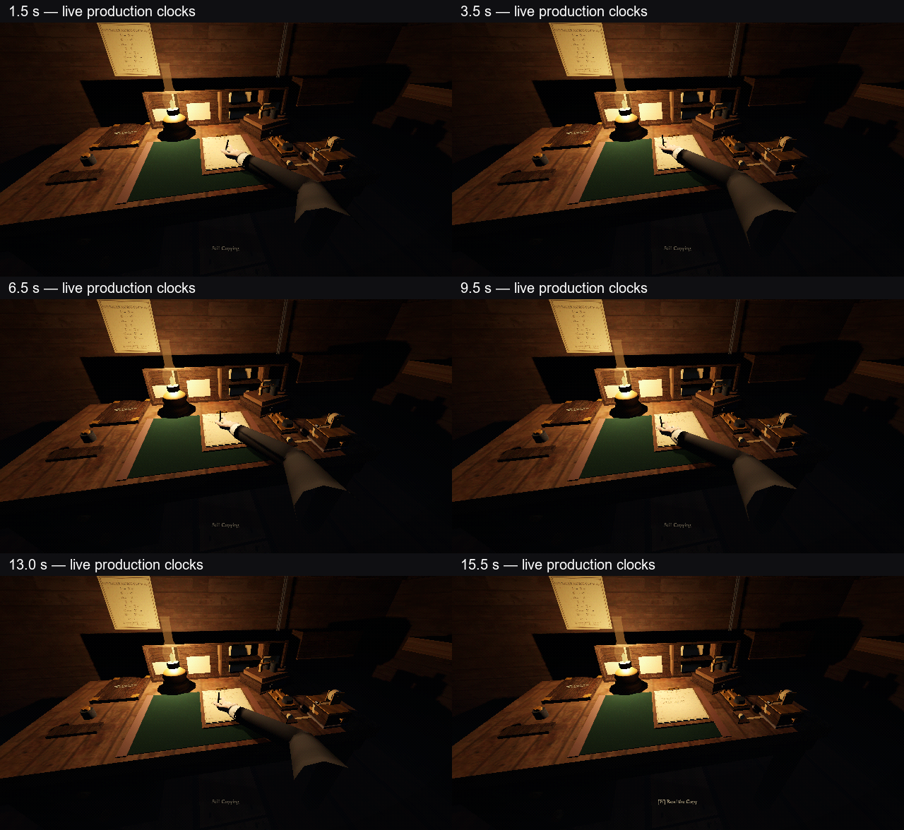

Подключённый кандидат, не финальная приёмка. Это новая связная низкополигональная оболочка по анатомическому брифу, авторски построенная кодом. Не Blender-скульпт, не mocap. Свет, поза пера и игровой WriterRig в этом проходе не менялись.
План · Результат и ограничения · Анатомический ресерч · Полная регрессия
Подготовка постановочная: интро пропущено, оператор уже сидит, фитиль полный, режиссёр смены отключён. Затем работает штатная передача. Это не запись действий человека и не проверка темпа целой смены.
Анимацию штрихов пока не внедряли: готовый глиф по-прежнему появляется на glyph_contact. Новая форма кисти не выдаётся за решённое живое письмо. Следующий отдельный проход — траектории пера и звук по контакту.

Связные переходы ладони, большого пальца и пальцев вместо отдельных перекрывающихся оболочек. Форма остаётся стилизованной; особенно внимательно смотреть ширину ладони и контакт указательного.

720p — ровно1280×720. Запрошенный1080p ограничен Windows до1920×1061, даже без рамки. Не растягивали и не называем точным1080p.


Тесты проверяют контракты, не красоту. Человеческая приёмка и ощущение тревоги ещё не подтверждены. Никаких commit/push.